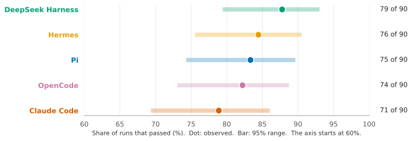
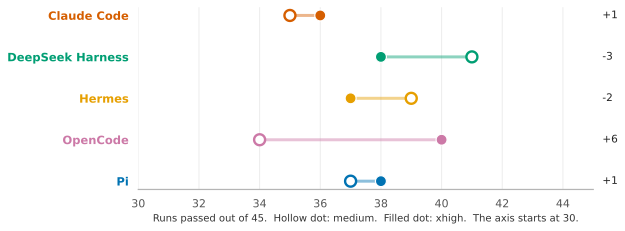
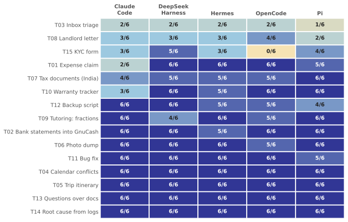
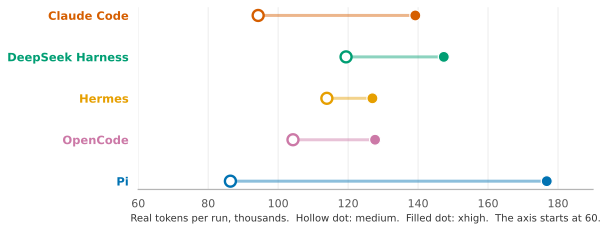

Five agent harnesses on everyday laptop tasks, with a local model
This report compares five agent harnesses on 15 everyday laptop tasks, with the same model behind all of them. A harness is the program that gives a model its tools, such as a shell and a file editor, and keeps calling the model until the task is done. The harnesses are Claude Code, DeepSeek Harness, Hermes, OpenCode and Pi. Each harness ran each task three times (three rounds) at each of two reasoning effort settings, medium and xhigh, which makes 90 runs per harness and 450 in all. A run passes when its score is 100%, meaning every check on its result is right.
Method
The tasks are requests a person might make of their own computer, such as filing an expense claim, sorting an inbox or filling in a form. Each task is given once, as one message with its input files, and no follow-up question is answered. Every input file is invented for the test. Table 1 lists the tasks. The Tests page gives the exact wording of each request and what it is scored on.
Table 1. The 15 tests.
| Test | Name | What the request asks for |
|---|---|---|
| T01 | Expense claim | Fill in a company expense claim from receipt photos and a travel policy. |
| T02 | Bank statements into GnuCash | Add transactions from bank statements to an accounting file, without duplicates. |
| T03 | Inbox triage | Label 50 emails as Urgent, Action, FYI or Junk, and draft some replies. |
| T04 | Calendar conflicts | Find clashes across three calendars for one week and suggest fixes. |
| T05 | Trip itinerary | Build one itinerary from booking emails, using the latest changes. |
| T06 | Photo dump | Sort photos into folders by the date taken and remove duplicates. |
| T07 | Tax documents (India) | Find the documents needed for a tax return in a home folder and list their amounts. |
| T08 | Landlord letter | Write a letter to a landlord from a rental agreement, an email thread and an invoice. |
| T09 | Tutoring: fractions | Turn a textbook chapter into a lesson, a quiz and a small offline quiz page. |
| T10 | Warranty tracker | Match receipt and label photos and work out return and warranty dates. |
| T11 | Bug fix | Fix a bug in a small Python library and add tests. |
| T12 | Backup script | Write a backup script from a specification and test it. |
| T13 | Questions over docs | Answer three questions from product documentation and cite the pages. |
| T14 | Root cause from logs | Find why a home server went down from its logs. |
| T15 | KYC form | Fill in a flat PDF form from a details file. |
Each result is scored by rules and not by a judge model. The rules check file contents, PDF form fields, hidden unit tests and facts. A task has several parts, each scored as a percentage, and the score is their average. Most of these tasks are pass or fail in practice: a claim with a wrong total, or an accounting file edited wrongly, cannot be used. For that reason only 100% counts as a pass, and a score below 100% shows how close a run came and is not a partial pass.
All runs used Qwen3.8-Flash-Next in NVIDIA's NVFP4 build, served by vLLM on one NVIDIA DGX Spark, with a context window of 262,144 tokens. Runs were made one at a time against the same server. Claude Code sends requests in Anthropic's message format, and the server accepted them directly, with no translator in between. Reasoning effort controls how much the model thinks before it answers. The model accepts three settings: low, medium and xhigh, the highest. We ran medium and xhigh. The server uses xhigh when a harness sends no setting. The Setup page shows how each harness was set to send each level and what each one was seen to send.
The harness versions were as follows.
| Harness | Version |
|---|---|
| Claude Code | 2.1.322 |
| DeepSeek Harness | 0.2.2-rc.1 |
| Hermes | Agent 0.23.0 |
| OpenCode | 1.19.5 |
| Pi | 1.5.0 |
Each run started in a fresh Docker container that held only that task's input files, with a time limit of 45 minutes and no limit on the length of the model's output. A recording proxy between the container and the server logged the token counts and timings. In this report, real tokens means the new text the model had to read plus all the text it wrote. Text the server read again from its cache is not counted. The Setup page gives the rest of the details.
Findings
1. The five harnesses pass at similar rates
Over 90 runs each, DeepSeek Harness passed 79 (87.7%), Hermes 76 (84.4%), Pi 75 (83.3%), OpenCode 74 (82.2%) and Claude Code 71 (78.8%). Figure 1 shows each rate with its 95% range, the range in which the true rate probably lies given that only 90 runs were made. The ranges overlap heavily. To test whether a spread this large could arise by chance, we shuffled the harness labels across all 450 runs 5,000 times. A spread as large as the observed one appeared in 61% of the shuffles, so the data does not show that any harness passes more often than another. The picture is the same at each effort setting. At medium the harnesses passed 34 to 41 of 45 runs, and at xhigh 36 to 40 of 45.
Claude Code is made by a company that builds frontier models. Here it ran the same Qwen model as the other four, and it passed no more often than they did.

2. No harness passed every task every time
Across all harnesses, 75 of 450 runs did not pass. Table 2 counts, for each harness and effort setting, the tests that passed in all three rounds. The most any harness managed was 12 of 15. In 6 to 9 of the 30 test and effort combinations of each harness, the test passed in some rounds and failed in others. A pass on one run therefore does not show that the next run of the same task will pass.
Table 2. Tests that passed in all three rounds.
| Harness | Medium | Xhigh |
|---|---|---|
| Claude Code | 10 of 15 | 10 of 15 |
| DeepSeek Harness | 12 of 15 | 11 of 15 |
| Hermes | 10 of 15 | 11 of 15 |
| OpenCode | 9 of 15 | 12 of 15 |
| Pi | 11 of 15 | 11 of 15 |
3. xhigh did not pass measurably more often than medium
Medium passed 186 of 225 runs (82.6%) and xhigh passed 189 of 225 (84.0%). Figure 2 shows the change for each harness. OpenCode passed 6 more runs at xhigh, Claude Code and Pi passed 1 more each, Hermes passed 2 fewer and DeepSeek Harness 3 fewer. OpenCode's gain is the largest. If the two settings passed equally often, a difference this large or larger would still appear about 17 times in 100, so it is not evidence of a real difference.
A second comparison pairs each harness and test at the two settings, which gives 75 pairs. In 16 pairs xhigh passed more of the three rounds, in 50 the count was the same and in 9 xhigh passed fewer. The average difference is +0.04 rounds out of 3, with a 95% range from -0.17 to +0.25. That range includes zero. Finding 7 gives the cost of xhigh.

4. Some tasks fail regardless of which harness is used
Figure 3 shows, for each test, how many of the 6 runs of each harness passed. Every harness failed T03 Inbox triage, T08 Landlord letter and T15 KYC form at least once, and T07 Tax documents (India) was failed by four of the five. Over all harnesses and both efforts, T03 Inbox triage passed in 9 of 30 runs, T08 Landlord letter in 15 of 30 and T15 KYC form in 15 of 30. Four tests (T04 Calendar conflicts, T05 Trip itinerary, T13 Questions over docs and T14 Root cause from logs) were never failed by any harness.
For two of these tests we checked whether the harnesses fail in the same way. In T03 Inbox triage, one email, the housing society's reminder about Rs 3,500 maintenance due on 10 November with a late fee, was labelled Urgent in 19 of the 30 runs, by all five harnesses. The answer key labels it Action: the due date is more than 48 hours away, and the late fee applies only after that date. In T08 Landlord letter, every one of the 15 failed runs, again from all five harnesses, said that the repair cost was taken off a payment that had already passed, when the letter is dated 7 November and the cost comes off the next one. For T07 Tax documents (India) and T15 KYC form we did not check whether the failures are the same mistake.
Choosing a different harness did not avoid these errors. In these two tests the error was in how the model read the task, and none of the five harnesses caught it.

5. Failures happened at short context
Context is the amount of text the model has in front of it as a run goes on. The window here is 262,144 tokens. Of the 75 runs that did not pass, 71 never went above 144,179 tokens (55% of the window), and 66 never went above 100,000. The median largest context was 37K tokens in the runs that passed and 38K in the runs that did not. Table 3 shows that up to 100,000 tokens the share of runs passing is between 83% and 86%. Above that there are too few runs (20 between 100,000 and 144,179 tokens, 6 above) to show a trend.
Table 3. Runs passed, by the largest context reached in the run.
| Largest context in the run | Runs passed |
|---|---|
| under 30K | 137 of 164 |
| 30K to 60K | 153 of 181 |
| 60K to 100K | 68 of 79 |
| 100K to 144K | 15 of 20 |
| over 144K | 2 of 6 |
6. Most runs that did not pass scored 90% or more
The average score of a harness is 96.9% to 99.4%, while its pass rate is 78.8% to 87.7% (Table 4). Table 5 shows why: 51 of the 75 runs that did not pass scored 90 to 99%. Four scored below 40%, and three of those scored 0%. Someone who read only the average scores would underestimate how often a run contains an error.
Table 4. Average score and passes, per harness (both efforts).
| Harness | Average score | Runs passed |
|---|---|---|
| DeepSeek Harness | 99.4% | 79 of 90 |
| Claude Code | 98.2% | 71 of 90 |
| OpenCode | 97.5% | 74 of 90 |
| Pi | 97.0% | 75 of 90 |
| Hermes | 96.9% | 76 of 90 |
Table 5. Scores of the 75 runs that did not pass.
| Score of the run | Runs that did not pass |
|---|---|
| 90 to 99% | 51 |
| 70 to 89% | 16 |
| 40 to 69% | 4 |
| below 40% | 4 |
7. Cost differs between harnesses, and xhigh raises it by different amounts
At medium, a run used 86K real tokens on average with Pi and 119K with DeepSeek Harness, which is 1.4 times as much, and the mean time per run ranged from 4.3 to 8.0 minutes. At xhigh the mean ranged from 127K to 177K real tokens. Over all harnesses, xhigh used 1.39 times the real tokens of medium and 1.68 times the time. Figure 4 shows the change for each harness. The ratio of xhigh to medium was 1.11 for Hermes, 1.23 for OpenCode, 1.23 for DeepSeek Harness, 1.48 for Claude Code and 2.05 for Pi. Pi used the fewest tokens at medium and the most at xhigh. The medians give the same two results, so a few long runs do not explain them.

Limits
Model and hardware. All runs used one model, Qwen3.8-Flash-Next in NVIDIA's NVFP4 build, on one DGX Spark. Another model, or the same model on other hardware, may give different results. In particular, a stronger model might pass tasks that this one fails, and the harnesses might then differ more.
Size. There are 15 tests, 3 rounds and 45 runs for each harness at each effort. Differences of a few runs are within chance at this size, and this report makes no claim about differences that small. The lack of a measured difference between harnesses, or between efforts, does not show that none exists.
Short tasks. The median largest context was 37K tokens, and 6 of 450 runs went above 144,179 tokens. These results say little about long tasks, or about whether a harness's context compaction works. The compaction setting of Claude Code, which we set to act at 55% of the window, was never reached: its largest context was 98K tokens.
Scoring. The checks are rules, and some were corrected during the project after we compared them with real outputs. All runs were scored again with the final checks. One test, T09 (the lesson and quiz for a child), depends partly on how well the explanation is written. Its checks verify the quiz answers by arithmetic, run the quiz page in a browser, and measure the lesson's length, reading level and page references. They cannot judge whether the explanation is good.
Setup. Each harness was run as released. We changed settings only to run it without a person present, to select the effort level and, for Hermes and Claude Code, to set compaction at 55% of the window. A harness configured differently, for example to check its own work against the request, might pass more often.
Runs set aside. Forty-four runs were set aside and run again because something was wrong with the run, not with the model's work. Nine of these were runs during which the laptop controlling the tests went to sleep. The Data page lists them and the runs that reached the 45-minute limit.
Conclusions
With this model, the five harnesses pass about the same share of runs, 78.8% to 87.7%, and the differences between them are within chance. None of them completes every task every time, and about one run in six contained an error. Some tasks fail in all five harnesses, and in two of them the harnesses made the same mistake. The failures happen at short context, and most of the runs that did not pass scored 90% or more. Because such an error can be easy to miss, the result of each run needs checking whichever harness is used.
Setting the reasoning effort to xhigh did not measurably raise the pass rate, and it cost 1.39 times the real tokens and 1.68 times the time. The harnesses differ in cost and in how much xhigh adds to it, and they do not differ measurably in how often they pass.
Data
The results of all 450 runs are in results.csv, one row per run. The Data page lists every run. The Tests page has the exact request for each test and the Setup page has the full configuration.